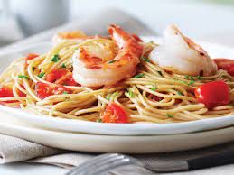

Prawn Pasta

Description
20 minutes is all it takes to make this mean midweek pasta dish, flavoured with all the good things: white wine, butter, olive oil and prawns.
Ingredients
- 1 tbsp olive oil
- 1 clove garlic, crushed
- 0.5 tsp dried chilli flakes
- 150g baby plum tomatoes
- 150ml white wine
- 200g spaghetti
- basil, a handful of leaves
- 225g raw peeled prawns
- a generous knob butter
Steps
- Heat the oil in a large frying pan, add the garlic and chilli flakes, and cook gently for 2-3 minutes. Add the tomatoes and cook for 3-4 minutes or until they start to soften. Tip in the wine and simmer for 5 minutes.
- Meanwhile, cook the spaghetti in boiling salted water until just tender then drain, reserving a cup of water.
- Stir the basil and the prawns into the tomatoes, season well, and cook until the prawns turn pink. Stir in the butter and spaghetti with a splash of the cooking water to loosen the sauce, toss and serve.